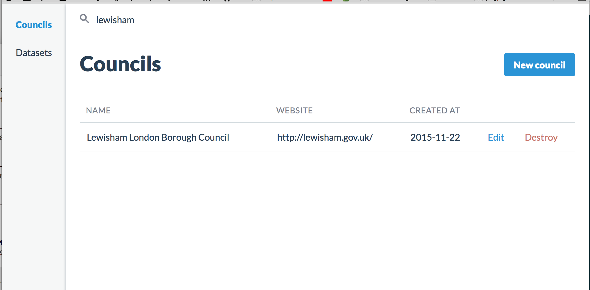
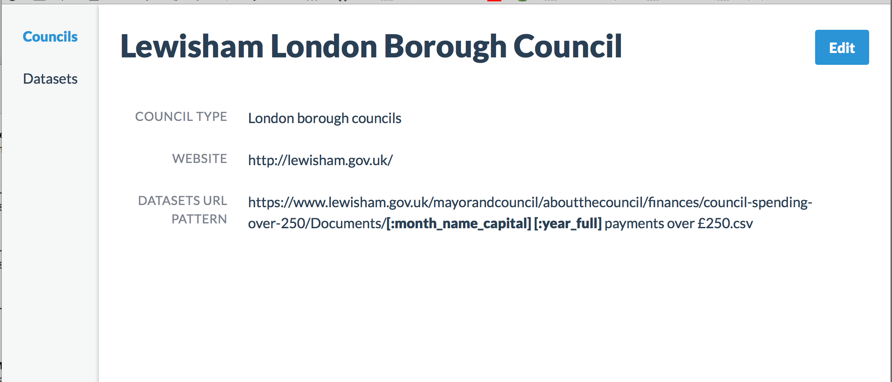

Problem
-
As resident
I would like have better picture about spending of my council
-
As researcher
I would like have all councils spending data in format that allows further data analysis
Every council publish spendings but:
-
User must find the spendings on council website. (discoverability)
-
Datasets are published in different formats and column types (processability)
-
Hard to compare and understand in different contexts (understandability)
Processability
Payment Date,Supplier,Service,Description,£ Spend (excluding VAT)
vs
1. YEAR,2. MONTH,3. COST CENTRE / DEPARTMENT RESPONSIBLE,4. SUPPLIER #,5. PUBLISHED SUPPLIER NAME,6. PURPOSE OF EXPENDITURE / MERCHANT CATEGORY,7. SPEND
vs local spending data guidance data content format
Splender is:
User friendly (councils) spending aggregation and comparison tool
Administration module:

Datasets auto discovery and aggregation:

TODO:
-
Convert comparison tool from prototype into application with real data
-
Finish auto discovery and aggregation module
-
Visualizations, notifications and more..
Thank You!
Credits:
-
https://github.com/thoughtbot/administrate
-
http://rubyonrails.org/
-
http://muicss.com/
-
https://nodejs.org/en/
-
and others..
Contact: nospam.keram@gmail.com / @marek_public
/